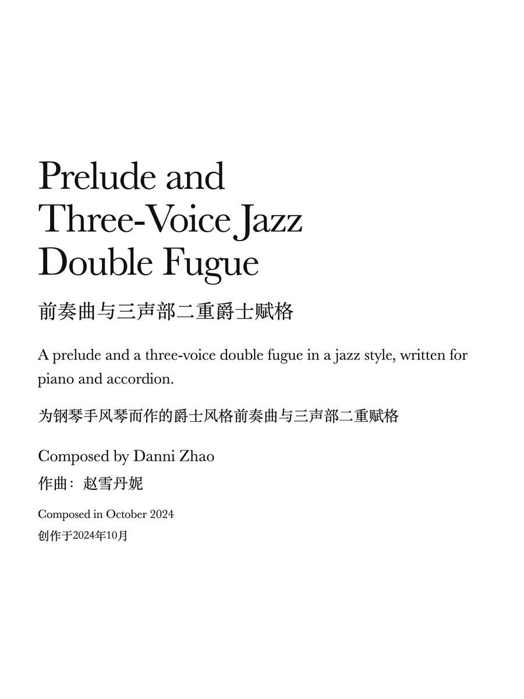

Prelude and Three-Voice Jazz Double Fugue 前奏曲与三声部二重爵士赋格
Live performance 8 min 05 sec
Live performance, October 2024. Piano: Qianlin Tan; accordion: Yumeng Xia.
Watch live performance on YouTube
About the work
A prelude and a three-voice double fugue in a jazz style, written for piano and accordion.
为钢琴手风琴而作的爵士风格前奏曲与三声部二重赋格
Documentation

All work
Next projectGlass Factory